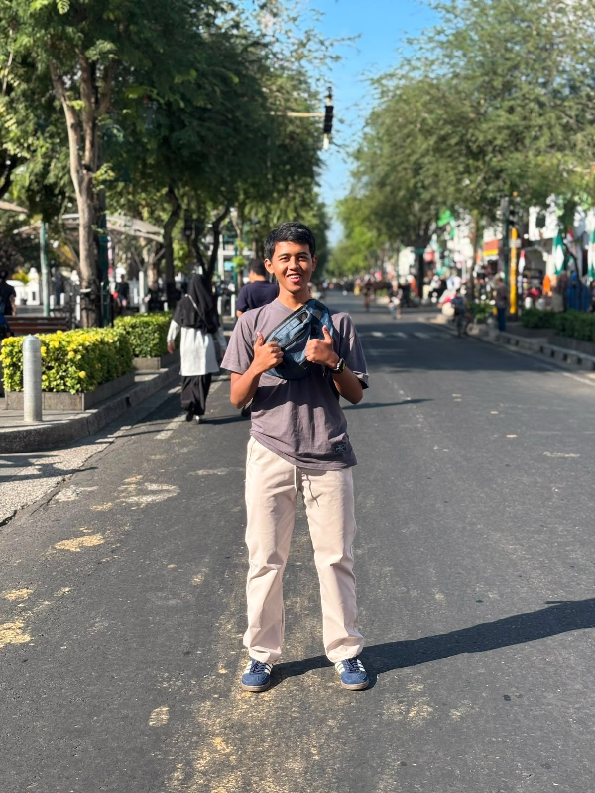
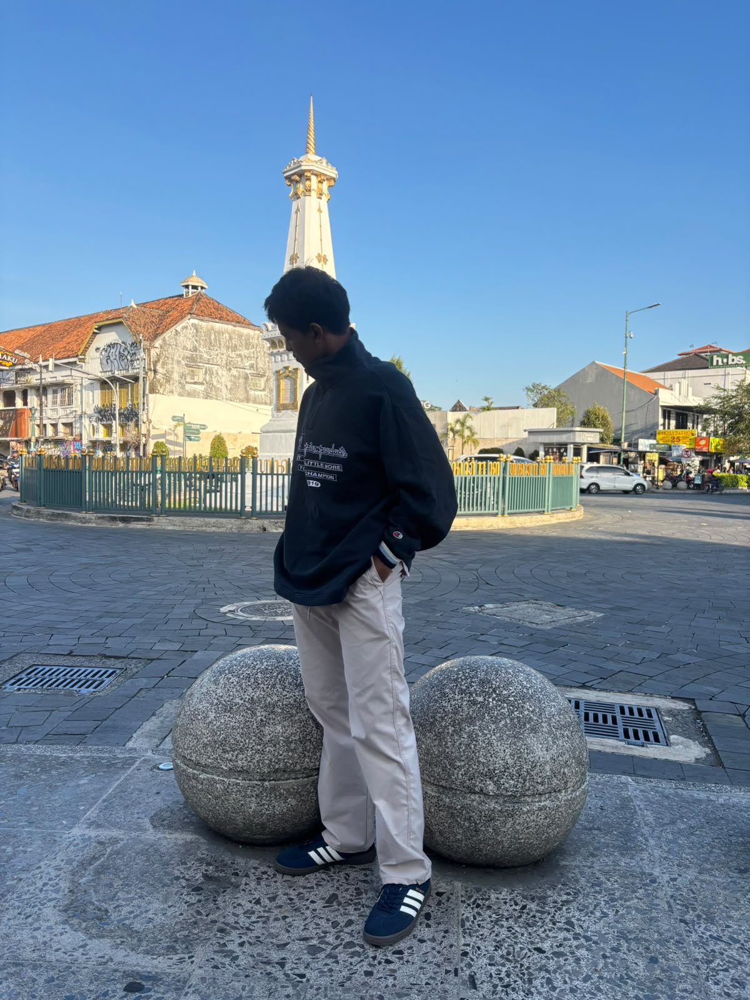
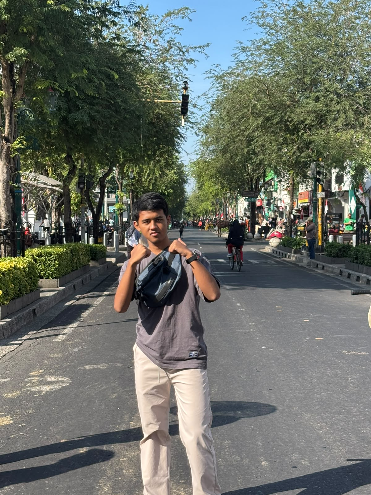
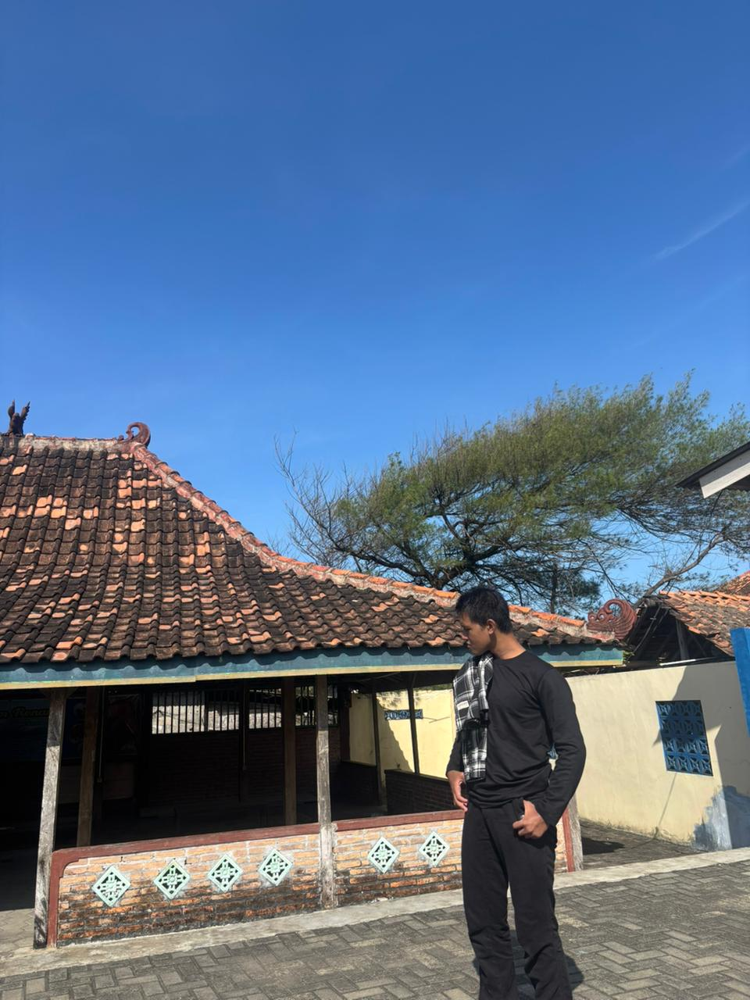
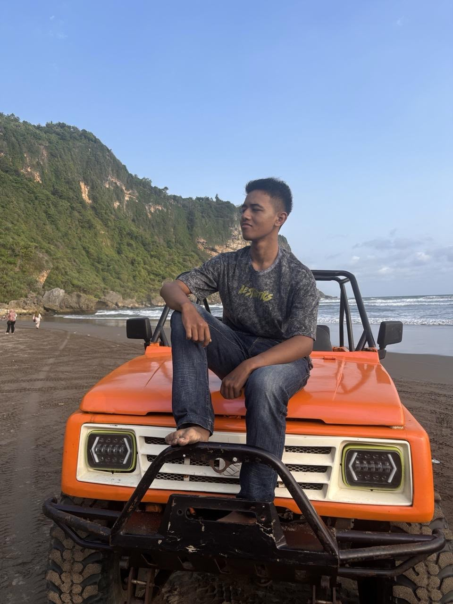
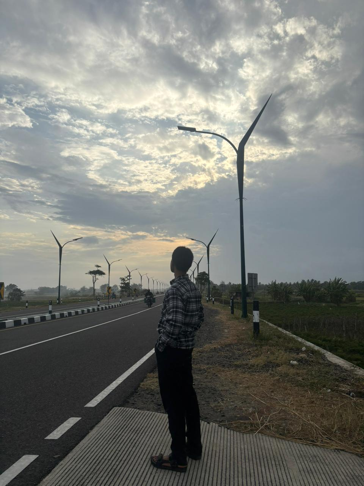
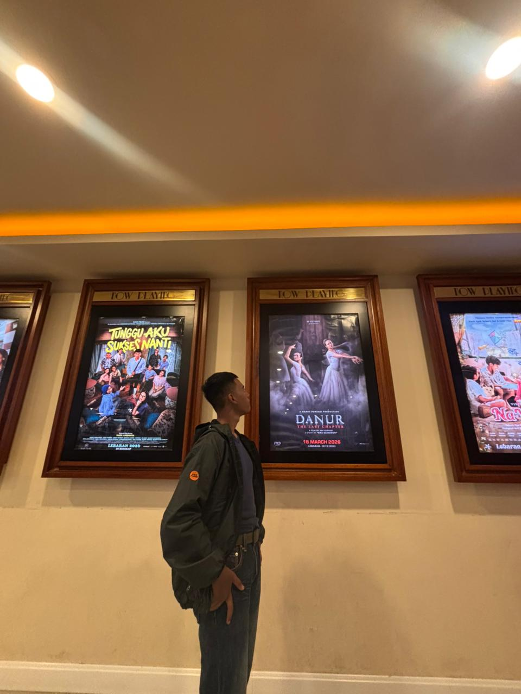
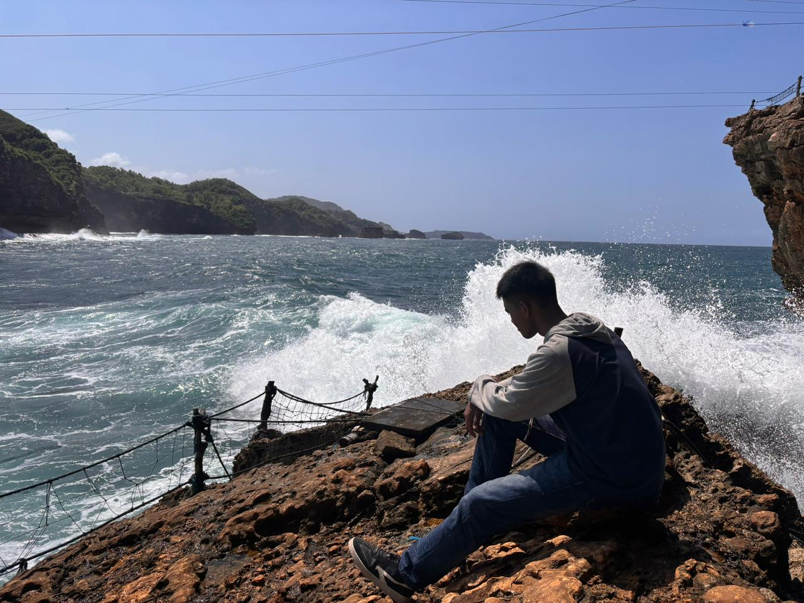
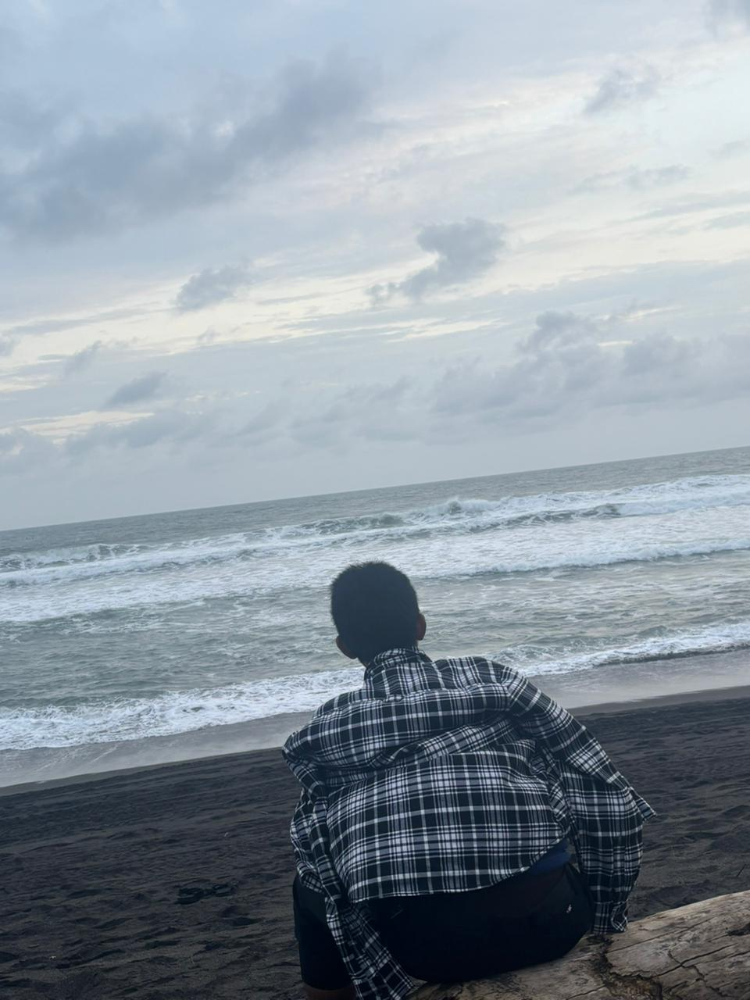
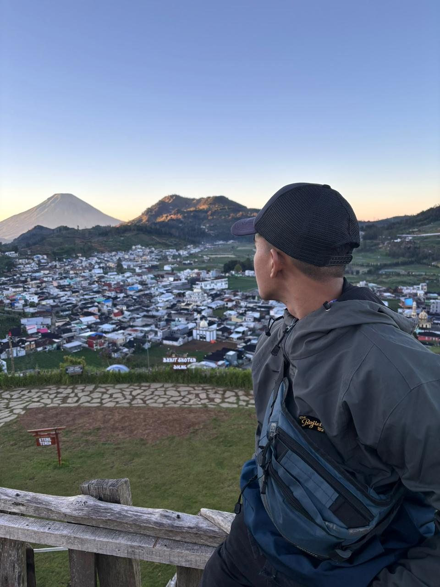

01
HTML
Menyusun struktur halaman web yang semantik, rapi, dan mudah diakses.
95% SKILLLOADING THE VISION...
CREATIVE PORTFOLIO // DIGITAL STUDIO
Saya adalah seorang creator dan developer yang fokus pada branding, desain, pengalaman digital, dan solusi visual yang membuat ide terasa hidup.
// MY STORY
Saya percaya bahwa desain bukan hanya tampilan, tetapi cara menyampaikan arah, energi, dan karakter sebuah brand.
Saya menggabungkan logika, kreativitas, dan pengalaman digital untuk menciptakan produk yang bukan sekadar indah, tapi juga punya makna dan tujuan.
Dari identitas visual, landing page, hingga pengalaman pengguna, setiap elemen dibuat agar terasa kuat, jelas, dan mudah diingat.
// SKILLS
Menyusun struktur halaman web yang semantik, rapi, dan mudah diakses.
95% SKILLMembangun tampilan responsive dengan layout, animasi, dan visual yang berkarakter.
90% SKILLMenghidupkan interaksi web, validasi form, animasi, dan komunikasi dengan API.
92% SKILLMengembangkan aplikasi, otomasi, dan layanan backend dengan Python.
88% SKILLMembuat server, endpoint API, autentikasi, dan logika aplikasi yang terstruktur.
86% SKILLMengelola data, relasi tabel, query, dan alur penyimpanan aplikasi.
84% SKILLMenghubungkan aplikasi dengan database menggunakan ORM yang aman dan konsisten.
82% SKILLMembangun antarmuka web interaktif dengan komponen yang reusable dan terstruktur.
85% SKILL// FEATURED WORK
Kumpulan karya web, aplikasi kasir, ensiklopedia Indonesia, dan aplikasi cuaca dalam satu pengalaman portfolio.
Aplikasi cuaca berbasis TypeScript dengan pencarian kota, data Open-Meteo, dan dukungan API key OpenWeather.
Aplikasi kasir sederhana dengan login, manajemen produk, keranjang, transaksi, dan riwayat penjualan.
Project interaktif berisi informasi cuaca, biodata developer, dan ensiklopedia sejarah Indonesia.
Platform digital dan kreatif berbasis Flask dengan layanan teknologi, edukasi, portfolio, dan kontak proyek.
// HOBI YUDA
Coding adalah cara saya mengubah ide menjadi website dan aplikasi yang bisa digunakan. Saya menikmati proses belajar teknologi baru, memecahkan masalah, dan membuat sesuatu dari nol.
CODE WITH PURPOSE ↗Workout membantu saya menjaga tubuh tetap aktif dan sehat. Latihan rutin juga melatih disiplin, kekuatan, serta konsistensi untuk mencapai target sedikit demi sedikit.
STAY CONSISTENT ↗Ngonten menjadi ruang untuk menuangkan ide, membagikan pengalaman, dan bercerita melalui foto, video, atau tulisan yang kreatif dan mudah dipahami.
CREATE & SHARE ↗Berenang membuat tubuh tetap bugar sekaligus membantu pikiran lebih rileks. Saya menikmati suasana air dan gerakan yang membuat tubuh terasa lebih ringan.
FIND YOUR FLOW ↗Joging adalah aktivitas sederhana untuk menjaga stamina dan energi. Berlari santai juga memberi waktu untuk berpikir, melepas penat, dan menikmati suasana sekitar.
MOVE FORWARD ↗Motor-motoran memberi kesempatan untuk menjelajah tempat baru dan menikmati perjalanan. Bagi saya, perjalanan bukan hanya tentang tujuan, tetapi juga pengalaman di sepanjang jalan.
RIDE THE NIGHT ↗"IDE BAIK TIDAK CUKUP HANYA MENYALA — IA HARUS DIAKHIRI DENGAN MAKNA."
— YUDA // CREATIVE CODE
// YUDA VISUAL JOURNAL
A chrome star turns in the dark and the whole page becomes one cinematic scroll — violet light, a bloom of drifting particles, and a camera that flies clean through it.
A neural-brand showreel that thinks ahead.









Vision, technology, and wonder bertemu dalam pengalaman digital yang terasa hidup.
// LET'S TALK
Punya ide, brand, atau kebutuhan digital yang ingin dibangun? Mari bahas dan ubah ide itu menjadi sesuatu yang terasa nyata.
// AI ASSIST